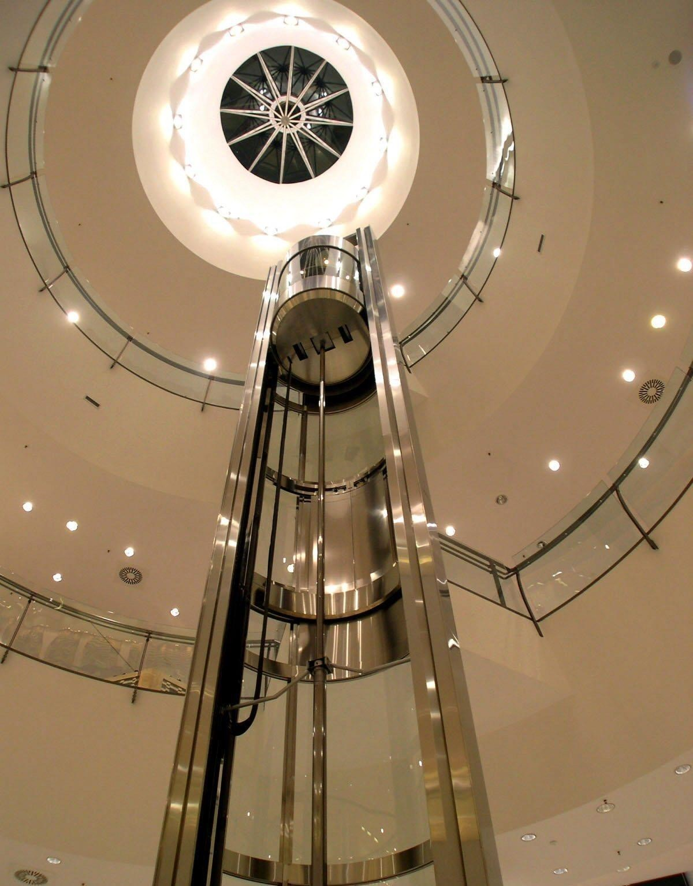
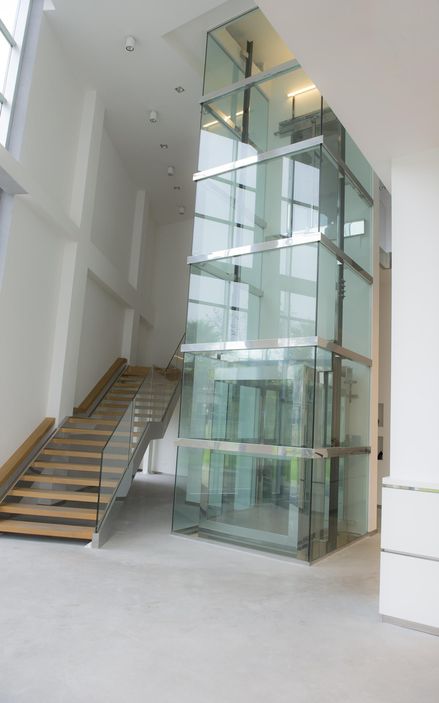

L'ascensore panoramico è un impianto di sollevamento con caratteristiche particolari soprattutto se collocato in esterni
Gli ascensori panoramici vetrati sono spesso una soluzione adatta anche agli edifici storici sia
esternamente che internamente. La trasparenza del vetro oltre ad essere una scelta di design,
migliora l'inserimento nelle facciate degli edifici.
Le cabine presentano una o più pareti vetrate (cristallo di sicurezza) per permettere la vista al di
fuori e
spesso sono collocate all'interno di un vano di vetro che protegge l'impianto.
Vano corsa acciaio e vetro
Questi impianti ascensore sono spesso utilizzati in ristrutturazioni dove non è disponibile negli interni dell'edificio uno spazio idoneo alla collocazione del vano corsa dell'elevatore. Il vano corsa è realizzato da una idonea struttura in acciaio che se necessario presenta controventature di irrigidimento. Per il rivestimento del vano ascensore si utilizza vetri antisfondamento di spessore minimo 6mm con finiture a scelta (cristalli: azzurato, riflettente, neutro, etc.) La tipologia meccanica può essere sia elettrico a funi che oleodinamico diretto o in taglia.
Cabine panoramiche
La cabina ascensore presenta solitamente un lato vetrato che ne rende più emozionante l'utilizzo potendo osservare l'esterno. Per gli edifici storici, o semplicemente per chi ama lo stile classico è possibile realizzare le cabine ascensori con boiserie in legno anche per gli impianti panoramici.
Edificio accessibile
 La soluzione dell'ascensore panoramico esterno può servire a rendere accessibile a disabili edifici che non hanno al loro interno gli spazi necessari per collocare il vano corsa. E' spesso utilizzato anche in contesti storici, collocando il vano corsa all'interno di corti o cortili, ed utilizzando il vetro come materiale di rivestimento per preservare il più possibile la luminosità degli spazi. L'ascensore oltre ad essere di aiuto per chi ha difficoltà motorie rappresenta per tutti un miglioramento del confort oltre ad essere un valore in più dell'edificio.